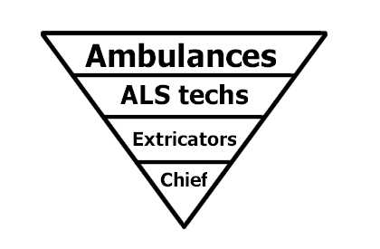
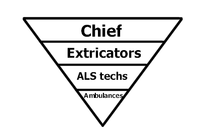

| K E M P S V I L L E V O L U N T E E R R E S C U E S Q U A D |
Successful strategies |
Add or view comments. |
Virginia Beach's population boom of the 1970's and 1980's put a stress on Virginia Beach's volunteer rescue squad system that it had never experienced before. The system's response to the increase in demand was not ideal, and it could've led to collapse. This is a description of the strategy that may have saved us from demise.
Many things were changing at once in the 1970's and 1980's: Technology, the economy, the 9-1-1 system, the healthcare system, the dwindling number of housewives, the sky-rocketing number of cars on the roads, and the population of Virginia Beach were just a few. It was very hard to gauge how these trends would affect the future, but two things were certain: The demand for EMS services was growing, and the number of volunteers seemed to be shrinking. To the volunteer rescue squad members of those days, this is what the public seemed to want, in order of how often they were needed:

When it came to deciding what kind of unit a member should staff, the system, for the most part, assigned its priorities according to the public's minute-to-minute demands, as shown above. This priority scheme led to the following situations:
No matter how capable and experienced a member was, if he or she were available during a time when the system was short-staffed on ambulances, that member came under intense pressure to spend their entire shift manning another ambulance.
Even if the member had been looking forward to staffing a more specialized (and therefore less busy) unit, he or she might be told to staff a less-specialized, much busier unit instead for an entire shift (or face disciplinary action).
The most capable and experienced members became the ones most likely to experience uncertainty, disappointment, and trouble when they showed up for their scheduled duties.
Because members were being called back to staff the less-specialized units, the system was often without any duty extrication units or a duty chief. In the absence of a duty chief, the dispatcher was the only universally-recognized central coordinator. Since most dispatchers lacked a comprehensive understanding of how a volunteer rescue squad system operated, the system was frequently plunged into near chaos. Even worse, there were always rescue squad members who would challenge the poor dispatcher's authority. Some ambulance units would try to assert authority over other ambulance units, because, after all, they were staffed with members who felt they should have been staffing ALS cars, or crash trucks, or the duty chief's car.
Exposure to uncertainty, disappointment, chaos, a weak authority structure, and an atmosphere of in-fighting, drove many very capable, very experienced members away. Such members found themselves to be much more appreciated in other agencies -- all of which were now growing, paid, career agencies that were looking for talent and empowering recruits to implement new programs and projects.
As the best members were lost to other agencies, the system found itself not only with fewer and fewer true leaders, but also with fewer meat-and-potatoes units -- ambulances and zone cars. Many of the members who were aware of the importance (and techniques) of recruiting were leaving.
A prime example of these factors is KVRS's experience with the FOSB (Fraternal Order of [Secret] Brothers) during the late 80's. The FOSB was a group of members who became an award-winning technical rescue team, using our Squad-9 as their platform. When KVRS refused to give them credit for their squad truck duties, instead telling them to run a full set of ambulance duties, they quit -- and for all intents and purposes became the Virginia Beach Fire Department's Company 10, using Tech-1 as their platform. KVRS lost these members as ambulance providers altogether, and lost control of extrication responses forever, city-wide. FOSB members would likely not have minded, however, running an ambulance call once or twice during their squad truck shift when demand for transports peaked. In fact, they may have relished the chance to display their wide range of capabilities, as most Squad-9 crews do today.
Then, in the early to mid 1990's, Virginia Beach EMS Director, Bruce Edwards, offered clear support for a complete reversal of staffing priorities. He called it, The Inverted Pyramid:

The new priority scheme was one part strategy for every one part faith. As it turns out, the faith component was well-placed. Here are some corollaries and consequences of the Inverted Pyramid of Priorities:
Corollary: If you schedule your most specialized resources (ie, chiefs and extricators) before you start scheduling your least specialized resources (ie, ALS and BLS providers), you will only fall short on the least-specialized end. When heavy demand requires that off-duty volunteers be called in, almost everyone can fill the gaps at the less-specialized end.
Corollary: When call demand and time constraints make it necessary, more specialized members (extricators, for instance) can temporarily be given less specialized assignments. Upon completing such temporary assignments, such members can return to their more specialized duties. These members end up exercising their many capabilities while retaining their more specialized primary roles, which adds to their esteem.
The Duty Chief is ever-present. A question commonly heard on the radio years ago -- "Is EMS-5 manned?" -- is quite uncommon today. The Duty Chief is recognized by city staffers, rank-and-file members, dispatchers, and other agencies as the properly authorized, widely empowered central coordinator for the system. On-shift power-plays are nipped in the bud. Good order and discipline is the norm.
KVRS strongly recommends the Inverted Pyramid of Priorities to other volunteer emergency organizations.
Read an excellent collection of "successful strategies" for process improvement in the following paper:
"It is vital to the success of improvement efforts to realize that process change entails cultural change. Numerous social and technical barriers must be overcome to effect lasting improvement."
Although this paper was originally written for software developers, it contains some key concepts that are directly applicable to process improvement in a volunteer emergency organization.
$Id$